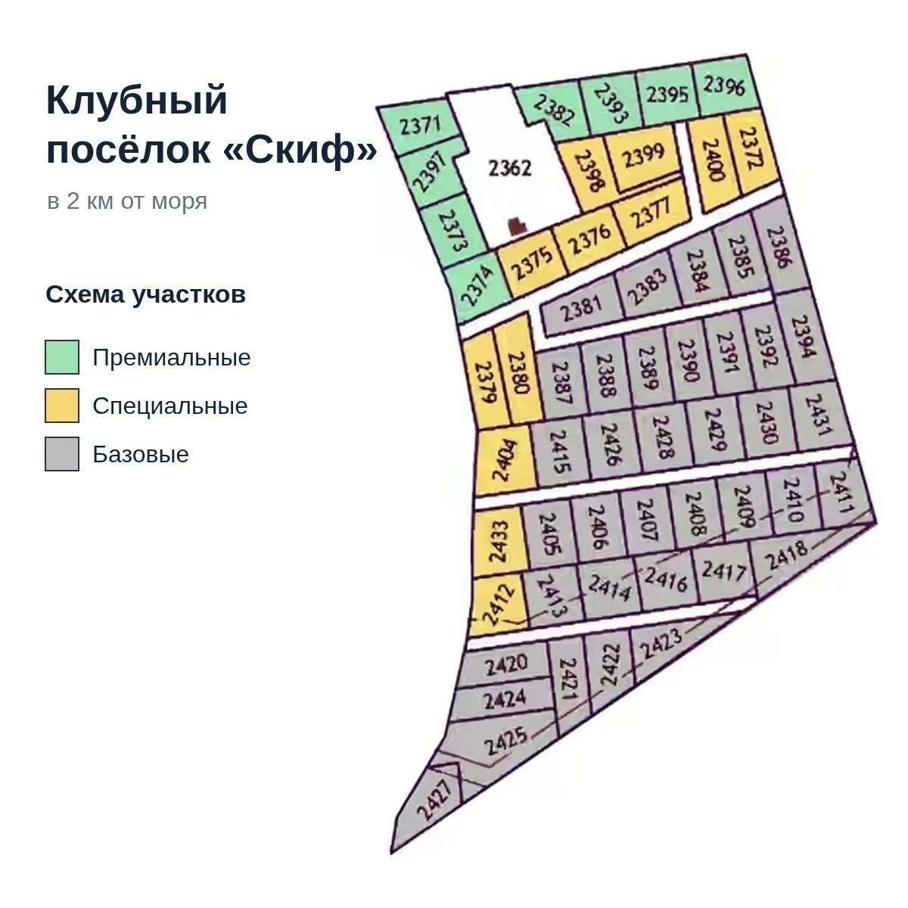

Восточный Крым / Щёлкино
Земля у Азовского моря
Участки от 4 соток в районе Щёлкино. Первая, вторая и третья линии. Подбор, видеопоказ и сопровождение сделки.
Щёлкино / участки от 4 соток
Расположение и стоимость
Три линии у Азовского моря. Точный участок, подъезд и документы покажем при подборе.
Указаны согласованные цены по линиям. Наличие, площадь и условия покупки уточняются при подборе.
Местность
Побережье Щёлкино
Бухта Космонавтов и Азовское море. Фото выбранного участка и дороги предоставим по запросу. Посмотреть район на карте
Большие участки / Щёлкино
Участки большой площади
Предложения для тех, кому требуется больше земли. Кадастровые номера и исходные материалы доступны для изучения.
Для ознакомления доступны исходные кадры кадастровой карты. При оформлении используются сведения ЕГРН.
360° · проект «Азгард»
Панорама местности
Панорамный тур по территории туристического проекта «Азгард» рядом с Бухтой Космонавтов. Можно приблизить изображение и осмотреть береговую зону.
Съёмка территории проекта «Азгард» (90:07:200601:2273). Это обзор местности, не видеопоказ продаваемых участков.
Запросить видеопоказ выбранной землиДругие направления
Другие участки Восточного Крыма
Предложения в посёлке «Скиф» и садовых товариществах Керчи.

Восточный Крым
Посёлок «Скиф»
от 500 000 ₽
Разные варианты по расположению и коммуникациям. Подберём участок под ваш бюджет и покажем его по видео.
Узнать вариантыКерчь
СНТ в Керчи
от 700 000 ₽
Подберём участок в подходящем товариществе. Для каждого варианта уточним подъезд, коммуникации и документы.
Подобрать участокКак работаем
Подбор и сопровождение
- 01
Подбор
Уточняем бюджет, цель покупки и желаемое расположение.
- 02
Просмотр
Показываем участок и подъезд на месте или по видео.
- 03
Документы
Сверяем ЕГРН, разрешённое использование и ограничения.
- 04
Сделка
Согласовываем расчёты и оформление. Рассрочка возможна для отдельных предложений.
Ваш контакт
Покажу участки и отвечу на вопросы
Меня зовут Алексей. Подскажу, какие варианты подходят под ваш запрос, и организую видеопоказ. Можно спросить про дороги, воду, электричество и документы до поездки.
Заявка
Обсудить участок
Выберите направление и оставьте телефон. Свяжемся, чтобы обсудить доступные варианты.
Если вы выбрали участок выше, укажите его в форме.